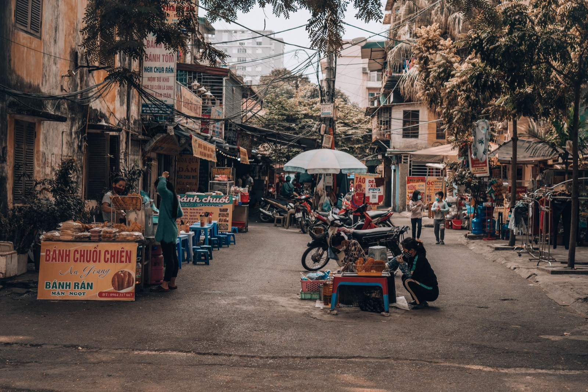

How to ride a bike in Vietnam: a guide for beginners

Your first minutes on the roads of Nha Trang look like chaos: bikes moving in a dense stream, someone honking, cars changing lanes. But the traffic has its logic. The main rule is to be predictable: move smoothly, look ahead and avoid sudden manoeuvres.
Where a beginner should start
Don't go out for the first time in the evening or at rush hour. Find a quiet straight street in the morning and spend 20–30 minutes on starting, stopping, slow U-turns and braking. Get a feel for the front and rear brakes separately. On sand, wet road markings and tiles, brake especially gently.
Before riding, check the helmet, mirrors, lights, indicators and brakes. A beginner usually finds it easier to watch the road on an automatic — more in the comparison of automatic and manual.
How to hold your place in traffic

- keep to the right, but leave space from parked cars;
- look several vehicles ahead, not at your front wheel;
- don't sit in the blind spot of a bus or truck;
- signal turns early and check the mirror and over your shoulder;
- don't copy people riding against traffic or through red lights.
A short horn often means “I'm here” or “I'm overtaking”, not aggression. When you hear it, keep your line and check the situation in the mirror.
Junctions and turning left
Don't pull away the instant the light turns green: look both ways first. When turning left, signal early, move smoothly into position and let oncoming traffic pass. If a wide junction scares you, it's safer to go straight, turn around in a quiet place and come back.
Roundabouts
Slow down before entering, assess the traffic on the roundabout and don't cut across several lanes. Before your exit, switch on the right indicator, but don't assume everyone has noticed it.
Five tourist mistakes
- Stopping suddenly. Mirror first, then move smoothly to the right.
- Riding too close. Leave room for someone's sudden manoeuvre.
- Forgetting the mirrors. Check them before changing your line.
- Riding after alcohol. A taxi is cheaper than the consequences.
- Treating a 50cc as a toy. It needs a helmet and attention too.
What to take on your first ride
A closed helmet, a phone with an offline map, some cash, a raincoat and photos of your documents. For the legal side, read the article about licences for 50cc.
In short
Start at a quiet time, move smoothly, keep your distance and check the space before any manoeuvre. After a few rides the traffic will make more sense, but caution should stay.